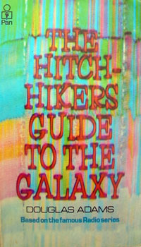
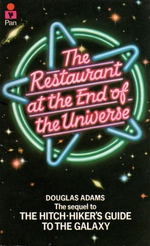
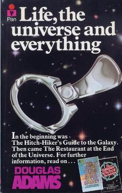
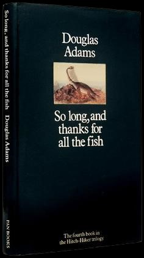

Douglas Adams

Douglas Adams was born on the 11th March 1952 in Cambridge, England and has been dead for tax purposes since the 11th May 2001.
While many people would see being dead as a bit of a tricky challenge to overcome, Douglas does not.
Mr. Adams is loved worldwide for his literary masterpieces such as the Hitchhiker's Guide to the Galaxy series among others.
The Hitchhiker's Guide to the Galaxy
"Don't Panic"

The Hitchhiker's Guide to the Galaxy is perhaps one of the best loved science-fiction novels ever created, originally released in 1979 as an adaptation of his radio series of the same name, it has left an impression on modern culture that lasts to this day.
Arthur Dent is a very simple man who just wants to live an uncomplicated life and has to fight against his local council wanting to knock down his house to build a new bypass through where it stands. There is one problem for the council however, a massive fleet of alien ships want to do the exact same thing to the Earth. Escaping the doomed Earth within the nick of time, Arthur is reluctantly taken on a hitchhiking trip across the galaxy by his friend Ford Prefect, whom he has only just recently discovered to be an alien as well and a writer for the most popular book in the universe, The Hitchhiker's Guide to the Galaxy.
The Restaurant at the End of the Universe

Following on from the end of the groundbreaking first novel in the Hitchhiker's Guide to the Galaxy series, The Restaurant at the End of the Universe follows the misadventures of Arthur Dent and his fellow shipmates of The Heart of Gold as they seek to get a simple bite to eat.... at The Restaurant at the End of the Universe, the name of which is unfortunately not misleading at all....
Life, The Universe and Everything

A planet of killer robots is hell-bent on destroying all of creation, that is, all of life, the universe and everything. The universe needs the bravest and most valiant heroes imaginable to answer the call to defeat these murderous machines and protect literally everything that exists. Unfortunately all that we do have is a bunch of gits including Arthur Dent. Let's just say that the universe is not in what you would call a hopeful position.
So Long, And Thanks for all the Fish

The fourth book in the Hitchhiker's Guide to the Galaxy 'trilogy' continues to follow the story of the hapless and reluctantly Arthur Dent as he wakes up one morning on Earth, just as he remembered it being before the whole global annihilation kerfufful. Just as he begins to accept that all of the space adventures he remembers were just a hallucination, he soon realises that despite what he may wish for, that does not appear to be the case...